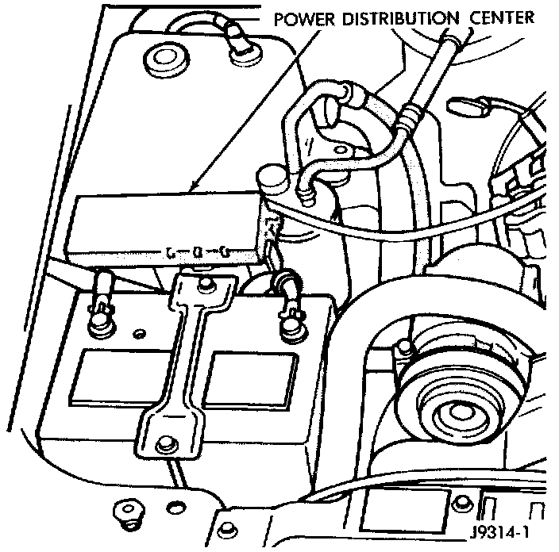

Automatic Shutdown (ASD) Relay Sense
AUTOMATIC SHUTDOWN (ASD) RELAY SENSE- PCM INPUTFig. 2 PDC:

A 12 volt signal at this input indicates to the Powertrain Control Module (PCM) that the Automatic Shutdown (ASD) relay has been activated. The ASD relay is located in the Power Distribution Center (PDC). The PDC is located in the engine compartment. Refer to label on PDC cover for relay location. The relay is used to connect the oxygen sensor heater element, ignition coil and fuel injectors to 12 volt + power supply.
This input is used only to sense that the ASD relay is energized. If the PCM does not see 12 volts at this input when the ASD should be activated, it will set a Diagnostic Trouble Code (DTC).